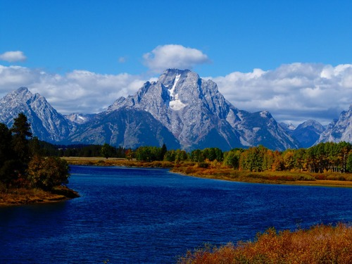
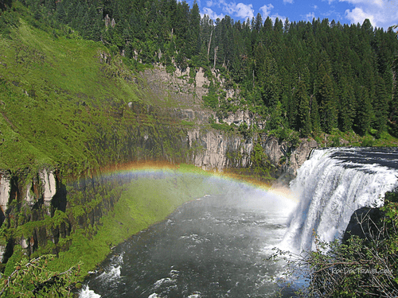
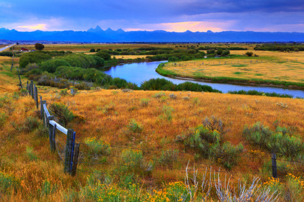

Warm River, located in the scenic Caribou-Targhee National Forest of southeastern Idaho, is a tranquil destination known for its slow-moving waters and picturesque surroundings. The river is a popular spot for rafting, offering a relaxing way to enjoy the natural beauty of the area. Anglers also frequent Warm River, casting their lines for whitefish, brook trout, rainbow trout, and cutthroat trout. Hiking, mountain biking, and horseback riding trails weave through the landscape, leading visitors to natural springs, waterfalls, and historic railroad lines. Ashton, Idaho, is just a short drive away, providing convenient access to gas, groceries, and other amenities. Whether you're looking for a peaceful retreat or an outdoor adventure, Warm River has something to offer for everyone.
The Snake River, one of the most significant rivers in the Pacific Northwest, flows through Idaho, offering breathtaking scenery and abundant recreational opportunities. Originating in Yellowstone National Park, the river winds through the rugged Hells Canyon, the deepest river gorge in North America, and the scenic Snake River Plain. Anglers flock to the river to fish for trout, salmon, and bass, while rafters and kayakers enjoy the thrilling rapids. The river also provides essential irrigation for agriculture in the region and is home to several hydroelectric dams. Whether you're looking for an adventurous outdoor experience or a peaceful float trip, the Snake River in Idaho has something for everyone.
Henry's Fork, a tributary of the Snake River, flows through the picturesque landscapes of eastern Idaho. Known for its world-renowned fly-fishing, the river meanders through high-desert floodplains, timber-covered canyons, and spring creek-like sections. Anglers from around the world visit Henry's Fork to catch large wild rainbows and elusive brown trout. The river's serene environment is also home to diverse wildlife, including moose, muskrat, geese, and blue heron. With its stunning scenery and abundant fish, Henry's Fork offers a tranquil escape for nature enthusiasts and fishing aficionados alike.
The Teton River, meandering through eastern Idaho, offers a picturesque escape for outdoor enthusiasts and nature lovers. Originating in the majestic Teton Range, the river flows through verdant valleys and scenic farmlands, providing a stunning backdrop for activities such as fly fishing, kayaking, and wildlife observation. Anglers are drawn to its clear waters, teeming with trout, while paddlers enjoy the gentle to moderate rapids that offer a mix of excitement and relaxation. The Teton River is also a vital resource for local agriculture, supporting irrigation in the fertile Teton Valley. With its tranquil beauty and recreational appeal, the Teton River is a cherished natural gem in Idaho.